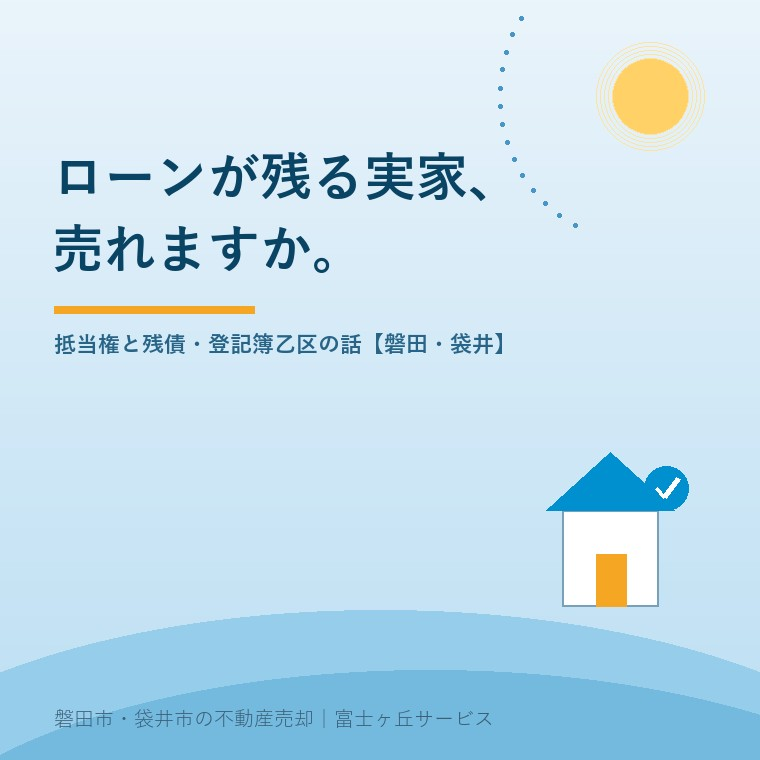

2026年8月4日｜カテゴリ：登記・ローン・売却の実務

この記事の要点
Q. 親のローンが残っている実家。ローンを払い終わるまで売れないの？
A. 売れます。売却代金でローンを完済し、引き渡しと同時に抵当権を抹消するのが標準的な流れで、完済を待つ必要はありません。分かれ目は「残債より高く売れるか」。また、親御さんが亡くなった場合は団体信用生命保険（団信）でローンが完済されていることも多く、まず登記簿とローンの現状確認からです。磐田市・袋井市・森町では、介護施設の運営から不動産事業を始めた富士ヶ丘サービスのような地域密着の会社に、登記簿の確認から相談するという選択肢があります。
実家の登記簿（登記事項証明書）を取ってみたら、「乙区」という欄に銀行の名前と「抵当権設定」の文字。「ローンが残っている家は売れないのでは」「そもそもこの抵当権、何？」──ご相談で本当によく聞かれるテーマです。結論から言えば、ローンが残っていても家は売れますし、とっくに完済したのに登記だけ残っているケースも山ほどあります。今日は登記簿の「乙区」にまつわる実務を、順番に解きほぐします。
登記簿は大きく、物件の概要（表題部）、所有者の記録（甲区）、所有権以外の権利の記録（乙区）でできています。住宅ローンを組むと、金融機関は「返済できなくなったらこの不動産から回収する」権利＝抵当権を設定し、乙区に登記します。
抵当権が付いたままの家は、理屈のうえでは売買できますが、実務では買い手がつきません。前の所有者のローンの担保を背負った家を買う人はいませんし、買主側の銀行も融資しないからです。だから売却のゴールは常に、「引き渡しと同時に、抵当権を消す」ことになります。
親御さんが亡くなってローンが残った場合、最初に確認すべきは団体信用生命保険（団信）です。住宅ローンの多くは団信付きで、契約者が亡くなると保険金でローンが完済されます。つまり「ローンが残っていると思っていたら、実は債務はもう消えていた」というケースがかなり多いのです。
ただし注意点が2つ。①債務が消えても抵当権の登記は自動では消えません。金融機関から抹消書類を受け取り、抹消登記の手続きが必要です。②団信なしのローン（古い契約・事業資金など）だった場合、債務そのものが相続されます。債務が大きく資産で賄えないなら、相続放棄（原則3か月以内）の検討も含めて、早めに全体像をつかむことが大切です。
| 状態 | 例 | どうなる |
|---|---|---|
| アンダーローン（残債＜売却額） | 残債800万円・売却1,500万円 | 決済時に売却代金から完済し、同時に抵当権を抹消。差額が手取りに。標準的な流れで何の問題もない |
| オーバーローン（残債＞売却額） | 残債1,500万円・売却1,000万円 | 不足分を自己資金で埋めて完済できれば売却可。難しい場合は金融機関の同意を得て売る「任意売却」の相談に |
まずやることは2つだけ。金融機関に残債の正確な額を確認する（返済予定表・残高証明）ことと、いくらで売れそうかの査定です。この2つの数字が並べば、どちらの世界の話なのかが分かり、打ち手が決まります。
実務で本当に多いのがこれです。ローンはとっくに完済したのに、抹消登記をしないまま何十年も経過している。抹消登記に期限はないため放置されがちですが、時間が経つほど、金融機関から受け取った書類の紛失、金融機関の合併・名称変更による手続きの複雑化など、手間が増えていきます。さらに古い話になると、明治・大正時代の抵当権が残っている「休眠担保権」もあり、こうなると特別な手続きが必要です。
抹消登記の費用は、登録免許税が不動産1件につき1,000円と、司法書士に依頼する場合の報酬（数万円程度）。売却の予定がなくても、完済済みの抵当権は見つけたときに消しておく──これが後の世代への親切です。
ローン中の家の売却では、決済（引き渡し）当日にすべてが同時に動きます。①買主が残代金を支払う → ②売主がその場でローンを完済する → ③金融機関が抵当権抹消の書類を渡す → ④司法書士が「抵当権抹消」と「所有権移転」の登記を同時に申請する。この段取りはすべて司法書士と不動産会社が仕切るので、売主さまが自分で調整する場面はありません。「ローンが残っているから売れない」と動きを止めてしまうのが、いちばんもったいないのです。
磐田市・袋井市のご実家なら、当社のふじがおか実家カルテの机上調査で、登記簿の乙区に何が残っているか（抵当権・根抵当権・古い担保）を最初に確認します。「乙区に何か書いてあるが意味が分からない」──その状態のままで大丈夫です。そのままお持ちください。
富士ヶ丘サービスは、磐田市・袋井市に特化した地域密着の会社として、登記簿の読み解きから金融機関・司法書士との段取りまで、売却の裏方をまとめてお手伝いします。ローンや抵当権が気になって動けずにいる方こそ、実家じまい相談室へどうぞ。
ふじがおか実家カルテ｜登記簿「乙区」のチェックから
抵当権・古い担保が残っていないか。売る前に、まず1冊に。
登記情報と固定資産税通知書から、名義・抵当権・道路・農地を宅建士が机上で確認し、売却までに必要な手続きを整理してお渡しします。
本記事は2026年8月4日時点の情報をもとに作成しています。残債の確認・任意売却の可否は各金融機関へ、抹消登記・休眠担保権の手続きは司法書士・法務局へ、相続放棄の判断は弁護士・司法書士へご確認ください。

この記事を書いた人：大石浩之（宅地建物取引士）
磐田市・袋井市・森町で「介護×相続×空き家」に特化した不動産売却支援を行う富士ヶ丘サービスの代表取締役・宅地建物取引士。介護施設の運営から不動産事業を始めた経験をもとに、売主とご家族が困らない売却を一件ずつお手伝いしています。プロフィール
磐田市・袋井市・森町の実家じまい・相続空き家相談
固定資産税通知書だけでも相談できます
住所があいまいでも、通知書や写真から名義・道路・農地・残置物の確認順を整理します。カルテ申込またはLINEで状況を送ってください。
富士ヶ丘サービス株式会社／静岡県磐田市見付5789番地1／TEL:0538-31-3308／静岡県知事 (2) 第14083号／代表取締役・宅地建物取引士 大石 浩之